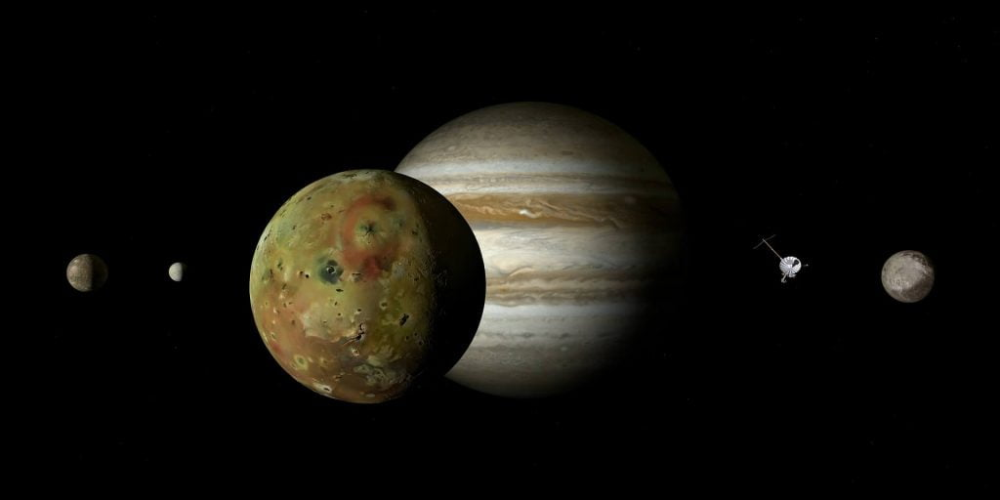

အကယ်လို့ မရမက ဆင်းခဲ့မယ်ဆိုရင် (၁) အလွန်ပူတဲ့ အပူဒါဏ်ကို ခံရမယ် (၂) ကြာသပတေး ဂြိုဟ်ကြီးရဲ့ အလယ်လောက်မှာ အပေါ်မရောက် အောက်မရောက် တစ်နေမှာ ဖြစ်ပါတယ်။
ကဲ …. ပြောမရဘူး အတင်းဆင်းမယ် ဆိုပါဆို့။
ဒါနဲ့ ကြာသပတေးဂြိုဟ်ကြီးက ဓါတ်ငွေ့လုံးကြီးဆိုတော့ ဆင်းလိုက်ရင် ဓါတ်ငွေ့လုံးကြီးထဲ ကျွံကျသွားပြီး အခြားတစ်ဖက်ကနေ ပြန်ထွက်လာနိုင်မလား။
မဆင်းမီ ပြင်ဆင်စရာ ရှိတာလေးတွေ ပြင်ဆင်ကြရအောင်ပါ။ ပထမဆုံးက ကြာသပတေးဂြိုဟ်ရဲ့ လေထုပါပဲ။ ကြာသပတေးဂြိုဟ်ရဲ့ လေထုထဲမှာ အောက်စီဂျင် မရှိပါဘူး။ ဒါ့ကြောင့် သွားမယ့်ယာဉ်ပေါ်မှာ အောက်ဆီဂျင် လုံလုံလောက်လောက် ပါသွားဖို့ လိုပါမယ်။ နောက်ပြီး ကြာသပတေးဂြိုဟ်ရဲ့ အပူချိန်က အရမ်းပြင်းတာမို့ အပူဒါဏ်ခံနိုင်တဲ့ အာကာသယာဉ် ဖြစ်ဖို့လိုပါတယ်။ ယာဉ်ထဲလဲ အဲကွန်း အားကောင်းကောင်း တစ်လုံးတော့ လိုမှာပေါ့ဗျာ။
ကြာသပတေးဂြိုဟ်ရဲ့ ဒြပ်ထုဟာ အလွန်ကြီးမားတာကြောင့် ဆွဲငင်အားကလဲ အရမ်းပြင်းထန်ပါတယ်။ ဒါ့ကြောင့် ကြာသပတေးဂြိုဟ်ရဲ့ လေထုထဲကို ဝင်ရာက်လာတဲ့ အခါမှာ အောက်ကို မြေဆွဲအားနဲ့ တစ်နာရီ မိုင် ၁၁၀,၀၀၀ (တစ်သိန်း တစ်သောင်း) နီးပါးနဲ့ ပြုတ်ကျမှာဖြစ်ပါတယ်။
သိပ်မကြာပါဘူး အောက်က ပိုမိုသိပ်သည်းတဲ့ လေထုထဲကို ဝင်ရောက်သွားပါလိမ့်မယ်။ ဒီ သိပ်သည်းတဲ့ လေထုကို ပြင်းထန်တဲ့ အရှိန်နဲ့ ဝင်ဆောင့်တဲ့အခါ ဘာနဲ့တူလဲ ဆိုတော့ အုတ်နံရံ တစ်ခုကို ခေါင်းနဲ့ ဝင်ဆောင့်ရ သလိုပါပဲ။ ပြင်းထန်တဲ့ အရှိန်နဲ့ ဝင်ဆောင့်မိမှာဖြစ်ပါတယ်။ ဒါပေမယ့် ဒီလေထုကလဲ သင့်အာကာသယာဉ် ပြုတ်ကျနေတာ ရပ်သွားအောင်တော့ လုပ်မပေးနိုင်ပါဘူး။ ဒါ့ကြောင့် သင့်အနေနဲ့ ကြာသပတေးဂြိုဟ် အတွင်းထဲကို ဆက်ပြီး ပြုတ်ကျနေ အုံးမှာ ဖြစ်ပါတယ်။

ကြာသပတေးဂြိုဟ်ဟာ နေအဖွဲ့အစည်းအတွင်းမှာ လည်ပတ်နှုန်း အမြန်ဆုံးဂြိုဟ် ဖြစ်ပါတယ်။ တစ်ပတ်လည်ဖို့ အချိန် ၉ နာရီ ၃၀ မိနစ်ပဲ ကြာပါတယ်။ ဒီလို လည်ပတ်နှုန်း အရမ်းမြန်တာဟာ ပြင်းထန်တဲ့ လေတိုက်ခတ်မှုကို ဖြစ်ပေါ်စေပါတယ်။ ကြာသပတေးဂြိုဟ်ရဲ့ မျက်နှာပြင်နားက တိမ်တိုက်တွေထဲမှာ လေက တစ်နာရီ မိုင် ၃၀၀ နှုန်းလောက်နဲ့ တိုက်ခတ်နေတာ ဖြစ်ပါတယ်။
နောက်ထပ် အောက်ထဲကို ဆက်ကျသွားလို့ မျက်နှာပြင်ကနေ ၇၅ မိုင် အနက်ကို ရောက်လာတဲ့ အခါ ကျွန်တော်တို့ လူသားတွေ လေ့လာဖူးတဲ့ ကြာသပတေးဂြိုဟ်ရဲ့ အနက်ဆုံး အပိုင်းကို ရောက်ရှိလို့ သွားပါမယ်။ ၁၉၉၅ ခုနှစ်က ဂယ်လီလီယို အာကာသ လေ့လာရေး ယာဉ်ဟာ ကြာသပတေးဂြိုဟ်ရဲ့ ဒီအနက်အထိ ဝင်ရောက်နိုင်ခဲ့ပါတယ်။ ၁၉၉၅ ခုနှစ်က ဂြိုလ်ပေါ်ကို ဆင်းတုန်းက ဒီအနက်ကိုကျော်သွားတာနဲ့ ဂယ်လီလီယို အာကသယာဉ်ဟာ ကမ္ဘာနဲ့ အဆက်အသွယ် ပြတ်သွားခဲ့တာပါ။ အဲ့တုန်းက ကြာသပတေးဂြိုဟ်ရဲ့ အတွင်းပိုင်မှာ ဂယ်လိီလီယို အာကာသယာဉ်ဟာ စုစုပေါင်း အချိန် ၅၈ မိနစ်ပဲ ခံခဲ့ပါတယ်။
ဒီအနက် ရောက်တဲ့ အချိန်မှာ ဓါတ်ငွေ့တွေရဲ့ ဖိအားက ကမ္ဘာ့မြေမျက်နှာပြင်က ဖိအားရဲ့ အဆ ၁၀၀ လောက်အထိ ပြင်းထန်လာပါတယ်။ နောက်ပြီး ပတ်ဝန်းကျင်ကိုလဲ မမြင်ရတော့တာမို့ သင့်အနေနဲ့ ယာဉ်ပေါ်ပါလာတဲ့ အာရုံခံ ကိရိယာတွေ အကူအညီနဲ့ပဲ ဆက်လက် ခရီးဆက်ရမှာ ဖြစ်ပါတယ်။
ကြာသပတေးဂြိုဟ်ရဲ့ အတွင်းပိုင်း မိုင် ၄၅၀ အနက် ရောက်တဲ့အခါမှာတော့ ဖိအားဟာ ကမ္ဘာမြေပြင်ပေါ်က ဖိအားထက် အဆပေါင်း ၁,၁၅၀ ပိုပြင်းထန် လာပါတယ်။ ဒီအနက်မှာ အာကာသယာဉ် ပျက်မသွားစေချင်ဘူးဆို သင့်ယာဉ်ကို ကမ္ဘာပေါ်က သမုဒ္ဒရာ ကြမ်းပြင် စူးစမ်းလေ့လာရေး ယာဉ်တွေ တည်ဆောက်ထားသလိုမျိုး အခိုင်အမာတည်ဆောက်မှ ရပါမယ်။ မဟုတ်ရင်တော့ သင်စီးနင်းလိုက်ပါလာတဲ့ အာကာသယာဉ်ဟာ တစ်စစီ ကြေကွဲ ပျက်စီး သွားမှာ ဖြစ်ပါတယ်။
အကယ်လို့ သင့်မှာသာ ကြာသပတေးဂြိုဟ် အတွင်းပိုင်းရဲ့ ပြင်းထန်တဲ့ ဖိအားကို ခံနိုင်တဲ့ အာကာသယာဉ်တစ်စင်း ရှိတယ်ပဲ ဆိုကြပါစို့။ တနည်းနည်းနဲ့ ဒီ့ထက်နက်တဲ့ အနက်ကို ဆက်ဆင်းသွား နိုင်ခဲ့မယ်ဆိုရင် သင်ဟာ အလွန်ကံကောင်းတဲ့သူ ဖြစ်သွားပါပြီ။ ဘာကြောင့်ဆို ကြာသပတေး ဂြိုဟ်ကြီးရဲ့ အတွင်းက ထူးဆန်းအံ့ဩ ဖွယ်ရာတွေကို သိခွင့်ရမယ့် ပထမဆုံး လူသားတစ်ဦး ဖြစ်လာမှာမို့ပါ။
ဒါပေမယ့် ကံဆိုးတာကတော့ သင့်အနေနဲ့ သင့်ရဲ့ တွေ့ရှိချက်တွေကို ဂြိုဟ်ပြင်ပက သူတွေ သိရှိအောင် ပြောပြနိုင်စွမ်း ရှိမှာ မဟုတ်တာပါပဲ။ ဘာ့ကြောင့်ဆို ကြာသပတေးဂြိုဟ်ရဲ့ အတွင်းပိုင်းက ဓါတ်ငွေ့ထုက အလွန်သိပ်သည်းတာမို့ သင်ပို့လွှတ်တဲ့ ရေဒီယို လှိုင်းတွေကို ဖမ်းယူထားမှာ မို့ပါ။ ဒါ့ကြောင့် သင်ပို့လွှတ်တဲ့ ရေဒီယို သတင်းပို့ချက်တွေကို ကမ္ဘာပေါ်က သင့်မိတ်ဆွေတွေ ဖမ်းယူရရှိနိုင်မှာ မဟုတ်ပါဘူး။
ကြာသပတေး ဂြိုဟ်ရဲ့ မျက်နှာပြင်အောက် မိုင် ၂၅၀၀ အနက်ကို ရောက်ရှိသွားရင်တော့ အပူချိန်ဟာ ၃,၄၀၀ ဒီဂရီ စင်တီဂရိတ် အထိပူလာမှာ ဖြစ်ပါတယ်။ ဒီအပူချိန်ဟာ အရည်ပျော်မှတ် အမြင့်ဆုံး ဖြစ်တဲ့ တန်စတင် (tungsten) သတ္တုကိုတောင် အရည်ပျော် သွားစေနိုင်တဲ့ အပူချိန် ဖြစ်ပါတယ်။ ဒါ့ကြောင့် အကယ်လို့ သင့်အာကာသယာဉ်ဟာ အပူဒါဏ် အခံနိုင်ဆုံးဖြစ်တဲ့ တန်စတင် နဲ့ ပြုလုပ်ထားခဲ့ရင်တောင် ဒီအနက်ကို ရောက်တဲ့အချိန်မှာ ယာဉ်တစ်ခုလုံး အရည်ပျော် သွားမှာ ဖြစ်ပါတယ်။
အခုဆို သင်ဟာ ကြာသပတေး ဂြိုလ်ကြီးထဲကို ပြုတ်ကျလို့နေတာ အချိန် ၁၂ နာရီခန့် ရှိသွားပြီ ဖြစ်ပါတယ်။ ဒါပေမယ့်လဲ အခုထိ ခရီးက တစ်ဝက်တောင် မကျိုးသေးပါဘူး။
အနက် မိုင် ၁၃,၀၀၀ လောက်ကို ရောက်တဲ့ အခါမှာတော့ သင်ဟာ ကြာသပတေးဂြိုလ်ကြီးရဲ့ အတွင်းဆုံး အလွှာကို ရောက်ရှိလို့သွားပါပြီ။ ဒီနေရာမှာ ဖိအားကလဲ ကမ္ဘာ့ မြေမျက်နှာပြင် ပေါ်မှာ ရှိတဲ့ ဖိအားရဲ့ အဆ ၂ သန်းလောက်ထိ ရှိလာပါပြီ။ အပူချိန်ကလဲ နေရဲ့ မျက်နှာပြင်က အပူချိန်ထက်တောင် ပိုပြီး ပူပြင်းလို့ နေပါပြီ။
ဒီလို အခြေအနေမှာ ထူးဆန်းတာတွေ ဖြစ်လာပါတယ်။ ဒါကတော့ ဘာလဲ ဆိုတော့ ဟိုက်ဒရိုဂျင် ဓါတ်ငွေ့တွေဟာ သတ္တုအဖြစ်ကို ပြောင်းလဲလို့ သွားတာပဲ ဖြစ်ပါတယ်။ metallic hydrogen လို့ခေါ်တဲ့ ဒီ သတ္တု ဟိုက်ဒရိုဂျင်မှာ ထူးဆန်းတဲ့ ဂုဏ်သတ္တိတွေ ရှိကြပါတယ်။ တစ်ခုကတော့ ဒီ သတ္တုဟိုက်ဒရိုဂျင်ဟာ အလင်းပြန်စွမ်းအား အလွန်ကောင်းတာပဲ ဖြစ်ပါတယ်။ ဒီအခြေအနေမှာ သင့် အာကာသယာဉ်ကနေ ထိုးထားတဲ့ မီးမောင်းဟာလဲ သုံးလို့ မရတော့ပါဘူး။ ဘာလို့ဆို မှန်ကို ဓါတ်မီးနဲ့ ထိုးသလို အလင်းတွေ အကုန် ပြန်နေတာကြောင့်ပဲ ဖြစ်ပါတယ်။
နောက် ဂုဏ်သတ္တိ တစ်ခုကတော့ ဖော့အားအလွန် ကောင်းတာပဲ ဖြစ်ပါတယ်။ ရေထဲကို ဖော့တုံး ထည့်လိုက်ရင် ဖော့တုံးက ရေပေါ်ကိုပဲ ပြန်ပေါ်နေ သလိုမျိုးပေါ့။ ဒါ့ကြောင့် သင့်အာကာသယာဉ်ဟာ (အခုထိ အသက်ရှင်နေ သေးမယ်ဆိုရင်) ရေထဲငုပ်ဖို့ ကြိုးစားနေတဲ့ ဖော့တုံးလို ဖြစ်နေမှာ ဖြစ်ပါတယ်။ ဒီအာကာသယာဉ်ပေါ်ကို ကြာသပတေးဂြိုလ်ရဲ့ ပြင်းထန်တဲ့ မြေဆွဲအားက ဂြိုလ်ရဲ့ အလယ်ဗဟိုကို ဆွဲချဖို့ ကြိုးစားနေချိန်မှာပဲ တပြိုင်ထဲမှာ ခုနက ဟိုက်ဒရိုဂျင် သတ္တုကလဲ အပေါ်ကို ပြန်ပြီး ကန်ထုတ်နေပါတယ်။ ဒါ့ကြောင့် သင့်အာကာသယာဉ်ဟာ အဲ့ဒီနေရာ မှာပဲ အပေါ်တက်လိုက် အောက်ဆင်းလိုက်နဲ့ ဖြစ်နေမှာပါ။ အောက်ကို ဆက်ဆင်းဖို့ အခြေအနေလဲ မပေးတော့ သလို အပေါ်ပြန်တက်ဖို့လဲ သင့်အနေနဲ့ မစွမ်းဆောင်နိုင်တော့ပါဘူး။ သင်နဲ့ သင့်အာကာသယာဉ်ဟာ ဒီနေရာမှာပဲ သောင်တင်သွားမှာ ဖြစ်ပါတယ်။
ဒါပေမယ့် ဒါတွေကို သင့်အိမ်က သင့်မိသားစု တွေကတော့ သိကြမယ် မထင်ပါဘူး။ သင့်ဆီက ဘာရေဒီယို ဆက်သူမှုမှ သူတို့ဆီ မရောက်နိုင် တော့လို့ပါ။ သင့်မိသားစုနဲ့ သင့်မိတ်ဆွေ တွေအတွက်ကတော့ သင်ဟာ ကြာသပတေးဂြိုလ်ထဲကို ဆင်းသွားပြီးနောက် နာရီအနဲငယ် အကြာမှာ အဆက်ပြတ် သွားခဲ့တယ် ဆိုတာပဲ သိမှာ ဖြစ်ပါတယ်။
ကမ္ဘာမြေက သူတွေကတော့ သင့်ကို အာကာသ သူရဲကောင်းကြီး တစ်ဦးအနေနဲ့ အမြဲ အမှတ်ရနေ ကြမှာပဲ ဖြစ်ပါတယ်။
What would happen if humans tried to land on Jupiter